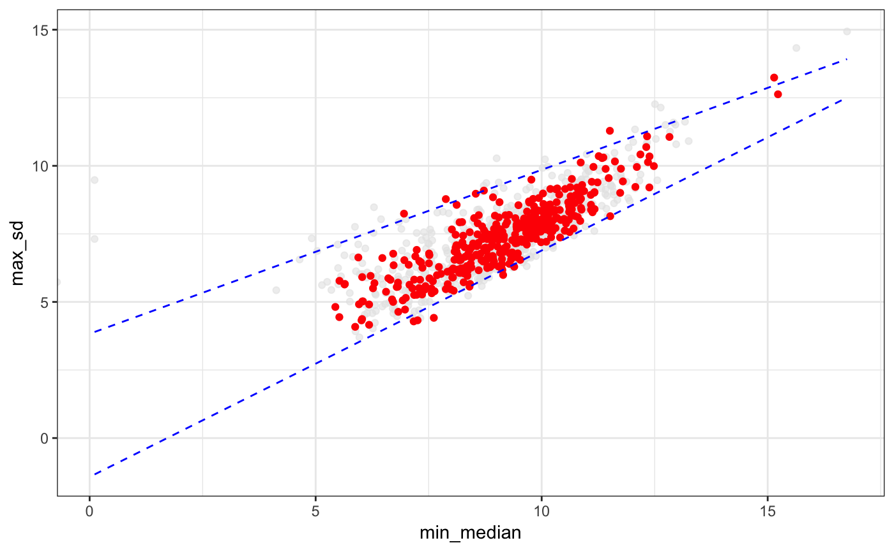

degMV.RdCorrelation of the standard desviation and the mean of the abundance of a set of genes.
degMV(group, pvalues, counts, sign = 0.01)
| group | Character vector with group name for each sample in the same order than counts column names. |
|---|---|
| pvalues | pvalues of DEG analysis. |
| counts | Matrix with counts for each samples and each gene. |
| sign | Defining the cutoff to label significant features. row number should be the same length than pvalues vector. |
ggplot2 object
data(humanGender) library(DESeq2) idx <- c(1:10, 75:85) dds <- DESeqDataSetFromMatrix(assays(humanGender)[[1]][1:1000, idx], colData(humanGender)[idx,], design=~group) dds <- DESeq(dds)#>#>#>#>#>#>#> #> #>#>#>#> Warning: Removed 1 rows containing non-finite values (stat_quantile).#> Warning: Computation failed in `stat_quantile()`: #> Package `quantreg` required for `stat_quantile`. #> Please install and try again.